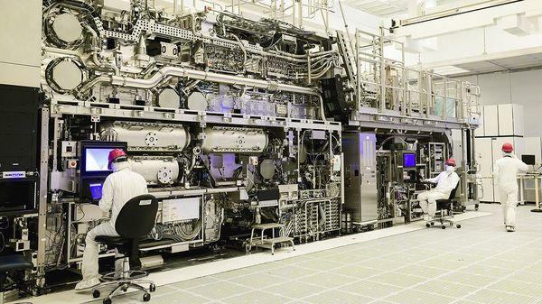
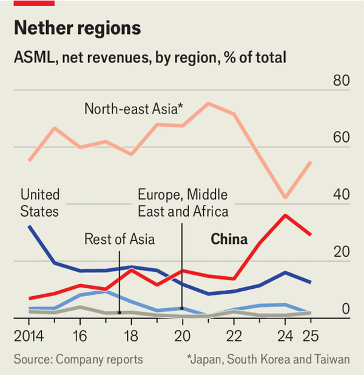

Jul 09, 2026 06:35 AM | Taipei

The Dutch punch above their weight in technology transfers that shaped the modern world. In the 17th century their financial and farming innovations spread to Britain, spurring the Industrial Revolution and the British empire’s expansion. Peter the Great, a Russian tsar, studied Dutch shipbuilding techniques to build the navy that made Russia a maritime power in the 18th century. And in the 1970s a Pakistani scientist, A.Q. Khan, stole blueprints from a Dutch lab to launch his country’s nuclear-weapons programme and seed similar efforts in North Korea, Iran and Libya.
Could Dutch know-how have just tilted the global balance of power again? So the Trump administration alleges. Since 2019 America has blocked the export to China of the extreme-ultraviolet, or EUV, lithography machines (pictured) that make the world’s most advanced semiconductors. These machines, whose creations power the most capable artificial-intelligence models, are made only by ASML, a Dutch firm. In recent weeks, however, America’s commerce secretary, Howard Lutnick, has thrown the company into crisis by sharing with it his concerns that one of these machines may have found its way to China.
Impossible, says ASML. Europe’s most valuable company has told American officials that it knows the exact location of all 340 EUV machines it has produced, including 26 decommissioned ones. None is in China, it says. What is more, only ASML can transport the highly sensitive machines, which it monitors online, and components that it ships are handled by ASML engineers in customers’ fabs. “ASML has never shipped an EUV machine to China, nor have we shipped to China any component, module or equipment specially designed to be used in an EUV machine,” the company says. Despite repeated requests, ASML has yet to be provided with any evidence to support Mr Lutnick’s allegation.
The Dutch government, while taking the American claim seriously, is pushing back, too. On a visit to Washington in late June, its trade minister, Sjoerd Sjoerdsma, tried to convince Mr Lutnick, other officials and members of Congress that the Dutch government strictly enforced its export controls, including on EUV technology. Speaking to The Economist on July 2nd, Mr Sjoerdsma declined to provide details of conversations about Mr Lutnick’s claim. But he says the Dutch government is not, at present, investigating the American allegation. “If there were things to be investigated or perhaps even to be prosecuted, then obviously we would do so,” he says.
The dispute hinges on whether there is any basis for Mr Lutnick’s allegation. Although no information supporting it has been made public, some people briefed on it describe it as “unverified” yet “not unfounded”. Many industry experts consider it highly unlikely that an entire EUV machine from ASML was shipped to China. But some believe that related components could have been, perhaps via ASML’s own suppliers or other third parties. Others think the issue is more likely to be ASML’s export to China of its older deep-ultraviolet, or DUV, lithography tools and related parts and services, most of which are not covered by export controls. ASML’s DUV-related exports to China accounted for about a third of its revenues in 2025.
Behind this controversy, however, lie much deeper differences over China’s technological progress and how Western governments should respond. It also highlights the recent friction between the Trump administration and many American allies. Some American officials see Europe as weak on China. Many European governments fear the Trump administration is undermining their economic and security interests while trying to strike its own preferential deals with China. Some European officials and executives also worry that the Trump administration is trying to strong-arm ASML and related companies into shifting more of their business to America to help develop the chip industry there.
One pivotal question is how far China has progressed in building its own EUV machine. Reuters, a news agency, reported in December that a team of former ASML engineers in China had completed a prototype EUV machine in 2025 and were testing it at a high-security lab in Shenzhen. ASML said it cannot control where former employees work, but they are bound by confidentiality agreements and in some cases the company has successfully taken legal action in response to theft of trade secrets.
The prototype had not yet created any working chips but the Chinese government had set a goal for it to produce functional ones by 2028, Reuters reported. Most experts think that unrealistic, and that it could be a decade before China has a working ·EUV machine·. Still, they concede China is making faster progress· than expected on EUVs, and some alternative technology.
The other big American concern is China’s innovative use of DUV technology. Chinese chip firms such as SMIC and Huawei have pushed the limits of a technique known as “multi-patterning”, allowing them to use DUV technology to make logic chips of less than seven nanometres, near the industry’s cutting edge. Those were previously only made by EUV machines. While that technique brings higher costs and more errors than EUV tools, some American experts believe it could allow China to produce millions of the advanced chips it needs to catch up with America in the race for AI supremacy. Many in Europe believe such risks must be balanced with the need to protect and expand the revenues of ASML and the ecosystem around it, while avoiding retaliation from China.
One pillar of America’s response is a new alliance of countries involved in Western AI supply chains. Known as Pax Silica, it aims to encourage partnership and common regulations in areas ranging from energy and critical minerals to advanced manufacturing and AI models. It has so far won support from 24 signatories, including the European Union and the Netherlands, which signed up in June during its trade minister’s visit. That could make it easier to share cutting-edge technology among like-minded countries and to unify export controls relating to EUV systems.

The more divisive American initiative is the MATCH Act, legislation that was introduced in April with bipartisan support. It would not just block sales of DUV machines to China, but also restrict ASML’s provision of servicing, spare parts and software support for the hundreds of DUV machines already there. And it would give the Dutch and others 150 days to align their controls with America’s or face action under the Foreign Direct Product Rule. That applies American export controls to foreign products whose manufacture involves technology that originated in America and, in ASML’s case, would oblige it to comply or face hefty fines and other penalties. Backers say such measures are necessary, given the national-security stakes. “I don’t support asking the companies nicely not to do this. I support making it illegal to do this,” says Gregory Allen, a former director of strategy at the Pentagon’s Joint AI Centre who now runs an advisory firm.
The Dutch, and some others, disagree. The MATCH Act is “really unfortunate from our perspective,” says Mr Sjoerdsma. He expresses particular concern about the threat to apply American law extraterritorially to Dutch and allied firms. “We believe that every country can best decide for itself what technology should be developed by its companies and what security risks this might or might not entail,” he says. Further grounds for his government’s scepticism is the contradiction between the demand to restrict exports of older DUV tools and the Trump administration’s agreement to allow the export to China of Nvidia’s h200 AI chips. They can only be made by some of the latest EUV machines.
Mr Sjoerdsma faced similarly tricky negotiations on a visit to China this week. It has denounced the MATCH Act and introduced regulations authorising it to penalise foreign companies that comply with American sanctions or export controls. The Netherlands is already reeling from the backlash to its decision in September to take control of Nexperia, a Chinese-owned Dutch chipmaker, to stop it from moving operations to China. The Chinese government responded by blocking Nexperia’s exports from China, severely disrupting European and Japanese carmakers.
The fracas over Mr Lutnick’s claim may die down, especially if America shares no evidence. But this is just an early salvo in the bigger battle over AI chokeholds. It will not be the last time that ASML and its technology are caught in the crossfire. ■
Subscribers can sign up to Drum Tower, our new weekly newsletter, to understand what the world makes of China—and what China makes of the world.